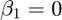
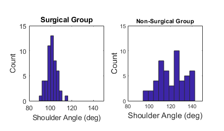
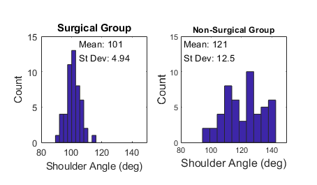
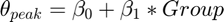
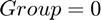
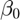
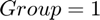
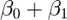

Hands-on Tutorial for Data Processing Pipelines
Although this session will focus on data analysis, many problems with rigor and reproducibility arise before any data are collected (e.g. study design and sampling).
Contents
- General coding principles
- A pipeline for analzying data for a single participant (inner loop)
- A pipeline for combining data from multiple participants (outer loop)
- Using simulated data to develop and validate analysis pipelines
- Example 1: Comparing mean values between two groups
- Step 1: Define your population parameters
- Step 2: Define your sample size for each group
- Step 3: Create a simulated dataset using the randn function.
- Step 4: Sanity check #1: Visualize data
- Step 5: Sanity check #2: Compute summary statistics
- Simplifying the alphabet soup of statistics with linear models
- Alternative approach: Use a linear model
- Create a table to store your data.
- Fit a linear model and test if 
General coding principles
- Write code for other humans and for your future self
- Use descriptive variable names
- Write good comments as you code. This requires striking a balance between being comprehensive and readability.
- Create well-documented examples that demonstrate how your code works
A pipeline for analzying data for a single participant (inner loop)
- Import raw data
- Perform manual or automated quality control (are measurements within an expected range, can noise be filtered, can errors be fixed?)
- Perform necessary pre-processing steps (segment long trials, compute secondary variables of interest, filter data)
- Perform manual or automated quality control
- Compute summary measures (why averaging is important)
- Perform manual or automated quality control
- Save the results
A pipeline for combining data from multiple participants (outer loop)
- Load each participant's data
- Store data in a single matrix or structurebz
- Perform manual or automated quality control
- Compute summary measures and perform statistical analysis
- Generate figures
Using simulated data to develop and validate analysis pipelines
- Take-home message #1: Generating simulated data can help you build intuition about factors that may influence the variance in your measurements and reduce your statistical power. Thinking about these factors before you collect your data can help you improve the rigor of your study design.
- Take-home message #2: Most common statistical analyses can be performed using a similar, model-based analysis approach.
- Take-home message #3: Your null hypotheses can generally be expressed as tests of whether coefficients in your model are equal to zero.
- Take-home message #4: Harness the power of simulation to develop your statistical inference skills.
The examples below are extensions of examples provided in the Data Skills for Reproducible Science online tutorial (https://psyteachr.github.io/msc-data-skills/) from the Richard Morey and Mossa Reimert at the University of Glasgow School of Psychology.
Example 1: Comparing mean values between two groups
You are conducting a study to determine if peak shoulder flexion differs in a group that has had surgery to repair a labral tear and a group that received physical therapy for their labral tear, but no surgery.
Here, we will generate artificial/synthetic/simulated data for this study. We will assume that the peak shoulder flexion angle in the surgical group is normally distributed with a mean of 100 degrees and a standard deviation of 5 degrees. We will also assume that the peak shoulder flexion angle in the non-surgical group is normally distributed with a mean of 120 degrees and a standard deviation of 10 degrees.
Step 1: Define your population parameters
Mean_Surgical = 100; SD_Surgical = 5; Mean_Non_Surgical = 120; SD_Non_Surgical = 10;
Step 2: Define your sample size for each group
Samp_Size = 50;
Step 3: Create a simulated dataset using the randn function.
Peak_Shoulder_Angle_Surgical = Mean_Surgical + SD_Surgical*randn(Samp_Size,1); Peak_Shoulder_Angle_Non_Surgical = Mean_Non_Surgical + SD_Non_Surgical*randn(Samp_Size,1);
Step 4: Sanity check #1: Visualize data
Make sure that the values are consistent with what you expect.
figure, subplot(1,2,1), hist(Peak_Shoulder_Angle_Surgical) xlabel('Shoulder Angle (deg)','FontSize',12) ylabel('Count','FontSize',12) title('Surgical Group') xlim([80 150]), ylim([0 15]), set(gca,'FontSize',10), axis square subplot(1,2,2), hist(Peak_Shoulder_Angle_Non_Surgical) xlabel('Shoulder Angle (deg)','FontSize',12) ylabel('Count','FontSize',12) title('Non-Surgical Group') xlim([80 150]), ylim([0 15]), axis square set(gcf,'Units','centimeters','InnerPosition',[5 5 12 7])
Step 5: Sanity check #2: Compute summary statistics
Make sure that they are consistent with what you expect.
Mean_Surgical_Sample = mean(Peak_Shoulder_Angle_Surgical); SD_Surgical_Sample = std(Peak_Shoulder_Angle_Surgical); subplot(1,2,1) text(105,14,strcat(['Mean: ' num2str(Mean_Surgical_Sample,3)])) text(105,12,strcat(['St Dev: ' num2str(SD_Surgical_Sample,3)])) Mean_Non_Surgical_Sample = mean(Peak_Shoulder_Angle_Non_Surgical); SD_Non_Surgical_Sample = std(Peak_Shoulder_Angle_Non_Surgical); subplot(1,2,2) text(82,14,strcat(['Mean: ' num2str(Mean_Non_Surgical_Sample,3)])) text(82,12,strcat(['St Dev: ' num2str(SD_Non_Surgical_Sample,3)]))
Simplifying the alphabet soup of statistics with linear models
Many of the most common statistical analysis procedures we use can be represented as a test of the coefficients of a linear model with continuous and categorical predictors.
Example: Use an independent-samples t-test to test the null hypothesis that your data are drawn from two normal distributions with the same mean.
Translation: Is there evidence to reject the claim that there is no difference in peak shoulder flexion between the surgical and therapy groups?
[Reject_Null, p_value] = ttest2(Peak_Shoulder_Angle_Surgical,Peak_Shoulder_Angle_Non_Surgical); disp(p_value)
5.1704e-18
Alternative approach: Use a linear model
Treat group (Surgical/Rehab) as a categorical, independent variable and test whether the coefficients of the groups differ from one another.

For the Surgical Group, . Therefore,  is the estimated mean for the Surgical Group.
For the Non-Surgical group, . Therefore,  is the estimated mean for the Non-Surgical Group.
If we reject the null hypothesis that , this suggests that the means for each group differ from one another.
Create a table to store your data.
Note that the third column of the Data table contains a "dummy variable" for Group assignment. This variable is zero for the Surgical group and one for the Non-Surgical group.
Note that the p-value for the Group effect is the same as the p-value from our t-test.
Data = table([Peak_Shoulder_Angle_Surgical; Peak_Shoulder_Angle_Non_Surgical],[zeros(50,1); ones(50,1)],... 'VariableNames',{'Shoulder_Flex_Ang' 'Group'});
Fit a linear model and test if
Model = fitlm(Data,'Shoulder_Flex_Ang ~ Group');
disp(Model)
Linear regression model:
Shoulder_Flex_Ang ~ 1 + Group
Estimated Coefficients:
Estimate SE tStat pValue
________ ______ ______ __________
(Intercept) 100.93 1.3465 74.957 2.3956e-88
Group 20.246 1.9042 10.632 5.1704e-18
Number of observations: 100, Error degrees of freedom: 98
Root Mean Squared Error: 9.52
R-squared: 0.536, Adjusted R-Squared 0.531
F-statistic vs. constant model: 113, p-value = 5.17e-18